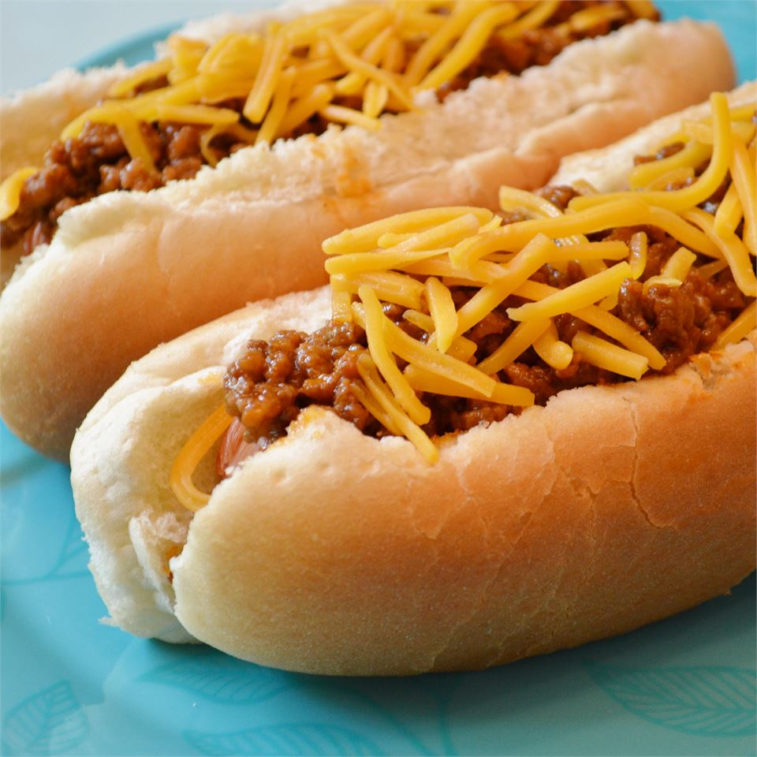

Grandpa's Classic Coney Sauce

Description
My Grandfather owned a drive-in restaurant back in the 1950's. This is his exact recipe for Coney Dogs from back in the day.
I make this on special occasions and it is always hit with friends and family. Enjoy.
Ingredients
- 2 pounds ground beef
- ½ cup chopped onion
- 1 ½ cups ketchup
- ¼ cup white sugar
- ¼ cup white vinegar
- ¼ cup prepared yellow mustard
- ½ teaspoon celery seed
- ¾ teaspoon Worcestershire sauce
- ½ teaspoon ground black pepper
- ¾ teaspoon salt
Steps
- Place the ground beef and onion in a large skillet over medium-high heat.
- Cook, stirring to crumble, until beef is browned.
- Drain.
- Transfer the beef and onion to a slow cooker and stir in the ketchup, sugar, vinegar and mustard.
- Season with celery seed, Worcestershire sauce, pepper and salt.
- Cover and simmer on Low setting for a few hours before serving.
Back to main page